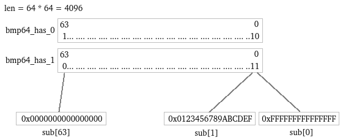
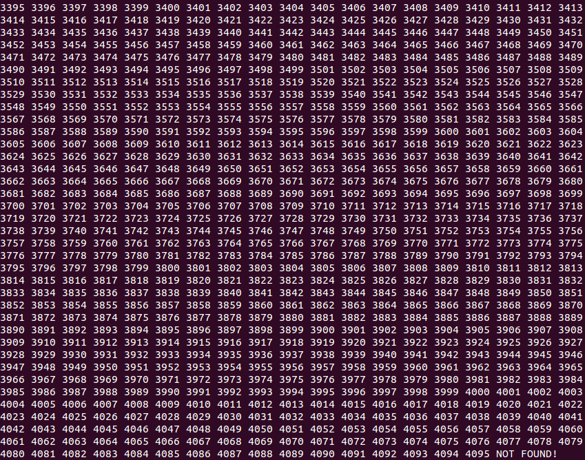

真是无语了。。。昨天写了一半了，结果不知啥原因，就变成乱码了，只好重写。
Bitmap是一个非常通用的基础设施，通常用来表示资源的可用状态。Bitmap可以使用一个字节数组来简单实现，逻辑上的第i个bit对应字节数组中第i/8个字节的第i%8个位。这种实现方式呢，随机访问（查询或者设置某个bit的状态）非常高效，可以在O(1)的时间复杂度内完成。但是搜索（比如查找一个值为1的位）的效率很差，因为顺序遍历需要O(n)的时间复杂度。但是，bitmap最最常用的功能就是搜索了，比如需要分配一个空闲的资源。我的很多项目都因为上述的这种简单bitmap而性能低下。所以我迫切需要一个高性能（至少对搜索操作高性能）的bitmap实现。
按照经验，把一个O(n)的遍历搜索加速的办法通常是使用二分搜索，变成O(logn)。那么问题是，一个很长的字节数组，折半之后，搜索不是依然需要顺序遍历吗？而且n/2 + n/4 + n/8 + ... + 1 趋近与n，根本不可能节省时间。因此，肯定不能使用字节数组这么简单的数据结构。
================阶段一：巧妙的bmp64=============
既然通用的bitmap没有头绪，那么我就退而求其次呗~我先考虑一个长度为64的bitmap。
我想到了一个好办法，利用了这么一个原理：在64位机器上，判断一个uint64_t是否为0的时间开销是固定的。如果我用一个uint64_t表示一个长度为64的bitmap，那么判断这64bit中是否有1，只需要判断这个uint64_t是否为0。类似的，比如我要判断第4位到第7位中是否有1，只需要把这个bitmap“与”0xf0，再判断是否是0即可。这样，搜索区域先从64bit变成32bit，再变成16bit，每次折半后，搜索的开销都是固定的指令数量，而不需要挨个遍历各个位。
举个例子，比如我有一个长度为64的bitmap
0000 0010 1000 0000 1100 0000 0000 1111 0000 0000 0000 0000 0000 0000 0000 0000
我用一个uint64_t来表示它：
uint64_t bitmap = 0x0280900f00000000;
首先判断bitmap != 0，那么就知道这64个bit中肯定有1。
二分搜索嘛，肯定少不了两个索引left和right，来表示搜索区域。虽然习惯上left < right，但是这里不同，规定left > right。这是因为，习惯上，我们表示一串二进制时，会把高位写在左边，把低位写在右边，就像上面的那串。起始时：
size_t left = 63;
size_t right = 0;
表示left和right中的所有bit，包括left和right所在位置的bit，是搜索区域。接下来就开始正式搜索了。
size_t mid = (left + right) / 2; // mid = 31
uint64_t mask = ((uint64_t)1 << (mid + 1)) - ((uint64_t)1 << right); // mask = 0xffffffff
这个mask是怎么回事呢？我们已经得知(64: 0]这64bit中一定有1，那么我们分成(64: 32]和(32: 0]两段，并且考察低位的(32 :0]这段里有没有1。考察(a: b]这么一段，就需要把其他的位都屏蔽掉，那么mask的第0~(b-1)位是0，第b~a位是1,第(a+1)~63位是0。
((uint64_t)1 << (a + 1)) - 1
能够产生低a位都是1、其余位都是0的掩码。
((uint64_t)1 << b) - 1
能够产生低(b-1)位都是1、其余位都是0的掩码。那么两者相减，就能产生所要的掩码。这就是上面mask的公式的原理。
if(bitmap & mask)
left = mid;
else
right = mid + 1;
上面代码中，我们先考察[mid: right]这一段是否有1，如果有，那么就让left = mid，也就是接下来在低位的半段搜索了，否则就在高位的半段搜索。为啥是right = mid + 1呢？因为既然[mid: right]中没有1，那么第mid位也肯定没有1,所以有1的肯定从mid + 1开始。于是，二分迭代就建立起来了！
bmp64.h
#ifndef BMP64_H
#define BMP64_H
#include <stdint.h>
#include <stdlib.h>
// 一个最长64位的bitmap
struct bmp64
{
// 长度
size_t len;
// 最多64个位
uint64_t bits;
};
#define BMP64_NOT_FOUND ((size_t)(-1))
// 初始化一个bmp64
// len: 长度，1~64
// value_all: 把所有位初始化为0还是1
// 成功返回1, 失败返回0
int bmp64_init(struct bmp64* bmp64, size_t len, int value_all);
// 查询指定位的值
// bmp64: 一个bmp64的指针
// index: 位的编号
// 失败返回-1,成功返回1或0
int bmp64_get(struct bmp64* bmp64, size_t index);
// 设置指定位的值
// bmp64: 一个bmp64的指针
// index: 位的编号
// value: 位的值
// 成功返回1, 失败返回0
int bmp64_set(struct bmp64* bmp64, size_t index, int value);
// 判断bmp64中，是否存在1或0
// bmp64: 一个bmp64的指针
// value: 位的值
// 存在返回1,不存在返回0
int bmp64_exist(struct bmp64* bmp64, int value);
// 在bmp64中，搜索一个值为value的位
// bmp64: 一个bmp64的指针
// value: 位的值
// 存在则返回找到的位的编号，不存在则返回BMP64_NOT_FOUND
size_t bmp64_search(struct bmp64* bmp64, int value);
#endif
bmp64.c
#include <bmp64.h>
#include <common.h>
int bmp64_init(struct bmp64* bmp64, size_t len, int value_all)
{
assert(bmp64);
if(len == 0 || len > 64)
ERROR(0, 0, "param <len = %lu> is invalid!", len);
bmp64->len = len;
bmp64->bits = value_all ? (~((uint64_t)0)) : 0;
return 1;
}
int bmp64_get(struct bmp64* bmp64, size_t index)
{
assert(bmp64);
if(index >= bmp64->len)
ERROR(-1 , 0, "param <index = %lu> is bigger than <bmp64->len = %lu>!", index, bmp64->len);
assert(index < 64);
return (bmp64->bits >> index) & (uint64_t)1;
}
int bmp64_set(struct bmp64* bmp64, size_t index, int value)
{
assert(bmp64);
if(index >= bmp64->len)
ERROR(-1 , 0, "param <index = %lu> is bigger than <bmp64->len = %lu>!", index, bmp64->len);
assert(index < 64);
if(value)
bmp64->bits |= ((uint64_t)1 << index);
else
bmp64->bits &= ~((uint64_t)1 << index);
return 1;
}
int bmp64_exist(struct bmp64* bmp64, int value)
{
assert(bmp64);
assert(bmp64->len <= 64);
uint64_t mask = bmp64->len == 64 ? (uint64_t)(-1) : ((uint64_t)1 << bmp64->len) - 1;
if(value)
return (bmp64->bits & mask) != 0;
else
return (bmp64->bits | ~mask) != (uint64_t)(-1);
}
size_t bmp64_search(struct bmp64* bmp64, int value)
{
assert(bmp64);
if(!bmp64_exist(bmp64, value))
return BMP64_NOT_FOUND;
if(value)
{
size_t left = bmp64->len - 1, right = 0;
while(left > right)
{
size_t mid = (left + right) / 2;
assert(mid < 63);
uint64_t mask = ((uint64_t)1 << (mid + 1)) - ((uint64_t)1 << right);
if(bmp64->bits & mask)
left = mid;
else
right = mid + 1;
}
size_t index = left;
return (bmp64->bits >> index) & (uint64_t)1 ? index : BMP64_NOT_FOUND;
}
else
{
struct bmp64 reverse;
reverse.len = bmp64->len;
reverse.bits = ~(bmp64->bits);
return bmp64_search(&reverse, 1);
}
}
其中用到的common.h与《伙伴分配器（buddy allocator）》中的一样。
=================阶段二：嵌套的bitmap=================
有了bmp64，那么最大64位长度的bitmap就完成了。可是很多时候64位不够啊，怎么办？能否基于bmp64构造任意长度的bitmap？
我初步想到了一个方案：使用n（0 < n <= 64）个bmp64，来表示最大长度64*n的bitmap。并且在上层，再用两个bitmap，来表示下层的第i个bitmap中是否有0或有1。拓扑结构如下：

这是一个双层结构，上面是两个bmp64，分别名为bmp64_has_0和bmp64_has_1。下层是64个bmp64，取名为sub[0], sub[1] ... sub[63]。bmp64_has_0的第i位如果为1，则表明sub[i]中存在0，否则不存在0。同理，bmp64_has_1的第i位如果为1，则表明sub[i]中存在1，否则不存在1。
因为sub[0]是0xffffffffffffffff，只有1没有0，所以bmp64_has_0的第0位是0,而bmp64_has_1的第0位是1。因为sub[1]是0x0123456789ABCDEF，既有0又有1，所以bmp64_has_0的第0位是1,而bmp64_has_1的第0位也是1。因为sub[63]是0x0000000000000000，只有0没有1，所以bmp64_has_0的第0位是1,而bmp64_has_1的第0位是0。
要访问逻辑上的第i位，其实就是对sub[i / 64]的第 i % 64位进行访问。接下来就是搜索问题。比如要搜索一个0，那么就在bmp64_has_0中搜索到一个1，比如返回编号是1，表明sub[1]中存在0。那么接着就在sub[1]中搜索0，比如返回编号是4，那么就得知，逻辑上的第1 * 64 + 4 = 68位是一个0。
对于其进行set操作，就需要修改bmp64_has_0和bmp64_has_1以保持一致性。当把第i位设置为0的时候，那么bmp64_has_0的第i / 64位直接设为1即可。而对于bmp64_has_1的第i / 64位，则为bmp64_exist(sub[i / 64], 1)的返回结果。对于设置1也是类似的。
当然，也可以叠加三层，四层，这样bitmap的长度就可以任意长。
Talk is cheap, show you my code!
bitmap.h
#ifndef BITMAP_H
#define BITMAP_H
#include <stdlib.h>
// 一个bitmap
struct bitmap
{
// 长度
size_t len;
// 一个数组，每个元素是一个struct bitmap或者struct bmp64
void* what;
};
#define BITMAP_NOT_FOUND ((size_t)(-1))
// 初始化bitmap
// len: 长度，任意长
// value_all: 把所有bit初始化为0或1
// 成功返回1，失败返回0
int bitmap_init(struct bitmap* bitmap, size_t len, int value_all);
// 查询指定位的值
// bitmap: 一个bitmap的指针
// index: 位的编号
// 失败返回-1,成功返回1或0
int bitmap_get(struct bitmap* bitmap, size_t index);
// 设置指定位的值
// bitmap: 一个bitmap的指针
// index: 位的编号
// value: 位的值
// 成功返回1, 失败返回0
int bitmap_set(struct bitmap* bitmap, size_t index, int value);
// 判断bitmap中，是否存在1或0
// bitmap: 一个bitmap的指针
// value: 位的值
// 存在返回1,不存在返回0
int bitmap_exist(struct bitmap* bitmap, int value);
// 在bitmap中，搜索一个值为value的位
// bitmap: 一个bitmap的指针
// value: 位的值
// 存在则返回找到的位的编号，不存在则返回BITMAP_NOT_FOUND
size_t bitmap_search(struct bitmap* bitmap, int value);
#endif
这里有个奇迹淫巧需要解释一下，就是这个struct bitmap结构。从上面那种图片中可以看到，最底层是若干个struct bmp64。所以应该是：
// 两层结构
struct bitmap
{
size_t len;
struct bmp64 bmp64_has_0;
struct bmp64 bmp64_has_1;
struct bmp64* subs;
};
但是，如果位数超过4096呢？那么就需要三层结构，那么第二层也是struct bitmap，而不是struct bmp64，也就是这样：
// 多层(三层及以上)结构
struct bitmap
{
size_t len;
struct bmp64 bmp64_has_0;
struct bmp64 bmp64_has_1;
struct bitmap* sub;
};
从而让struct bitmap层层嵌套。而如果位数在64位以内，那么struct bitmap就应该退化为struct bmp64，也就是
// 单层结构，退化为bmp64
struct bitmap // struct bmp64
{
size_t len;
uint64_t bits;
};
可见，除了len字段以外，其他字段都应该可以伸缩。所以我设计了这么一个结构：
struct bitmap
{
// 长度
size_t len;
// 一个数组，每个元素是一个struct bitmap或者struct bmp64
void* what;
};
确保sizeof(struct bitmap) == sizeof(struct bmp64)。同时bitmap中的len的偏移量和bmp64中的偏移量相同。对于what字段的解释根据len的不同而不同：
- 当0 < len <= 64时，void* what解释为uint64_t bits，即把bitmap看作bmp64；
- 当64 < len时，void* what解释为struct bitmap* what；其中，what[0]就是bmp64_has_0，what[1]就是bmp64_has_1。what[2 + i]就是sub[i]。
确保sizeof(struct bitmap) == sizeof(struct bmp64)就是为了能够让struct bitmap直接退化为struct bmp64而不浪费空间，并且使得这两个结构能混合放入同一个数组中。这个技巧在bitmap.c的实现中可以看到。
bitmap.c
#include <bmp64.h>
#include <bitmap.h>
#include <common.h>
// 当len > 64时，获取下一层的单元长度，
// 当64 < len <= 64 * 64时，sub_maxlen = 64 （双层结构）
// 当64 * 64 < len <= 64 * 64 * 64时，sub_maxlen = 64 * 64 （三层结构）
// 以此类推
#define GET_SUB_MAXLEN(len, sub_maxlen) for((sub_maxlen) = 64; (sub_maxlen) * 64 < (len); (sub_maxlen) *= 64)
// 当len > 64时，对于void* what字段解释
#define BMP64_HAS_0(bitmap) (((struct bmp64*)(bitmap)->what) + 0)
#define BMP64_HAS_1(bitmap) (((struct bmp64*)(bitmap)->what) + 1)
#define SUB_BITMAP(bitmap, index) (((struct bitmap*)(bitmap)->what) + (2 + index))
int bitmap_init(struct bitmap* bitmap, size_t len, int value_all)
{
assert(bitmap);
// 这两句断言确保struct bitmap可以“无痛”退化到struct bmp64
assert(sizeof(struct bmp64) == sizeof(struct bitmap));
assert(&(((struct bmp64*)0)->len) == &(((struct bmp64*)0)->len));
if(len == 0)
ERROR(0, 0, "param <len = %lu> is invalid!", len);
// 当len <= 64时，直接退化为bmp64
if(len <= 64)
{
int ret = bmp64_init((struct bmp64*)bitmap, len, value_all);
assert(ret);
return 1;
}
// 下一层最大长度。比如len = 1000，那么sub_maxlen就是64；比如len = 10000，那么sub_maxlen就是4096
size_t sub_maxlen;
GET_SUB_MAXLEN(len, sub_maxlen);
// 下一层有多少个单元。比如len = 1000，那么下一层的最大长度是64，需要16个单元（前15个单元的长度都是64，最后一个长度是40）
size_t sub_count = (len - 1) / sub_maxlen + 1;
assert(2 <= sub_count && sub_count <= 64);
bitmap->len = len;
bitmap->what = malloc(sizeof(struct bitmap) * (2 + sub_count));
if(!bitmap->what)
ERROR(0, 1, "malloc(sizeof(struct bitmap) * (2 + %lu)) failed!", sub_count);
// 如果都设置为1,那么bmp64_has_0就都是0, 否则都是1
int ret = bmp64_init(BMP64_HAS_0(bitmap), sub_count, value_all ? 0 : 1);
assert(ret);
// 如果都设置为1,那么bmp64_has_1就都是1, 否则都是0
ret = bmp64_init(BMP64_HAS_1(bitmap), sub_count, value_all ? 1 : 0);
assert(ret);
for(size_t i = 0; i < sub_count; i++)
{
// 下一层中，前sub_count - 1个单元的长度就是最大长度sub_maxlen，最后一个可能不足
size_t sub_len = i < sub_count - 1 ? sub_maxlen : len - sub_maxlen * (sub_count - 1);
// 递归结构！
int ret = bitmap_init(SUB_BITMAP(bitmap, i), sub_len, value_all);
assert(ret);
}
return 1;
}
// 把逻辑上的index分解为下一层单元的index和单元内的index
#define PARSE_INDEX(bitmap, index, sub_index, index_in_sub) \
do \
{ \
size_t sub_maxlen; \
GET_SUB_MAXLEN((bitmap)->len, sub_maxlen); \
(sub_index) = (index) / sub_maxlen; \
(index_in_sub) = (index) & (sub_maxlen - 1); \
assert((index_in_sub) == ((index) % sub_maxlen)); \
} \
while(0)
int bitmap_get(struct bitmap* bitmap, size_t index)
{
assert(bitmap);
if(index >= bitmap->len)
ERROR(-1 , 0, "param <index = %lu> is bigger than <bitmap->len = %lu>!", index, bitmap->len);
// 当len <= 64时，直接退化为bmp64
if(bitmap->len <= 64)
{
int ret = bmp64_get((struct bmp64*)bitmap, index);
assert(ret != -1);
return ret;
}
size_t sub_index, index_in_sub;
PARSE_INDEX(bitmap, index, sub_index, index_in_sub);
// 递归结构！
int ret = bitmap_get(SUB_BITMAP(bitmap, sub_index), index_in_sub);
assert(ret != -1);
return ret;
}
int bitmap_set(struct bitmap* bitmap, size_t index, int value)
{
assert(bitmap);
if(index >= bitmap->len)
ERROR(0 , 0, "param <index = %lu> is bigger than <bitmap->len = %lu>!", index, bitmap->len);
// 当len <= 64时，直接退化为bmp64
if(bitmap->len <= 64)
{
int ret = bmp64_set((struct bmp64*)bitmap, index, value);
assert(ret);
return ret;
}
size_t sub_index, index_in_sub;
PARSE_INDEX(bitmap, index, sub_index, index_in_sub);
struct bitmap* sub_bitmap = SUB_BITMAP(bitmap, sub_index);
// 递归结构！
int ret = bitmap_set(sub_bitmap, index_in_sub, value);
assert(ret);
// 修改bmp64_has_0和bmp64_has_1以维护一致性
// 如果把第i位设置为了1，
if(value)
{
// 那么BMP64_HAS_1的第sub_index位直接设为1，因为sub_bitmap中肯定有1
bmp64_set(BMP64_HAS_1(bitmap), sub_index, 1);
// 而0的数量可能会减少，所以需要重新判断
bmp64_set(BMP64_HAS_0(bitmap), sub_index, bitmap_exist(sub_bitmap, 0));
}
// 反之亦然
else
{
bmp64_set(BMP64_HAS_0(bitmap), sub_index, 1);
bmp64_set(BMP64_HAS_1(bitmap), sub_index, bitmap_exist(sub_bitmap, 1));
}
return 1;
}
int bitmap_exist(struct bitmap* bitmap, int value)
{
assert(bitmap);
// 当len <= 64时，直接退化为bmp64
if(bitmap->len <= 64)
return bmp64_exist((struct bmp64*)bitmap, value);
// 如果查询是否存在1，只有查询bmp64_has_1中是否存在1
if(value)
return bmp64_exist(BMP64_HAS_1(bitmap), 1);
// 如果查询是否存在0，只有查询bmp64_has_0中是否存在1
else
return bmp64_exist(BMP64_HAS_0(bitmap), 1);
}
size_t bitmap_search(struct bitmap* bitmap, int value)
{
assert(bitmap);
// 当len <= 64时，直接退化为bmp64
if(bitmap->len <= 64)
{
size_t index = bmp64_search((struct bmp64*)bitmap, value);
if(index == BMP64_NOT_FOUND)
return BITMAP_NOT_FOUND;
return index;
}
// 在bmp64_has_<value>中查找到一个1
size_t sub_index = bmp64_search(value ? BMP64_HAS_1(bitmap) : BMP64_HAS_0(bitmap), 1);
if(sub_index == BMP64_NOT_FOUND)
return BITMAP_NOT_FOUND;
// 在sub[sub_index]中查找一个值为value的位
size_t index_in_sub = bitmap_search(SUB_BITMAP(bitmap, sub_index), value);
assert(index_in_sub != BITMAP_NOT_FOUND);
size_t sub_maxlen;
GET_SUB_MAXLEN(bitmap->len, sub_maxlen);
// 计算逻辑上的索引
return sub_index * sub_maxlen + index_in_sub;
}
浓浓的递归结构啊！
写一个测试：
test_bitmap.c
#include <bitmap.h>
#include <common.h>
int main()
{
int ret;
struct bitmap b;
ret = bitmap_init(&b, 4096, 0);
assert(ret);
ret = bitmap_exist(&b, 0);
assert(ret);
ret = bitmap_exist(&b, 1);
assert(!ret);
ret = bitmap_set(&b, 3500, 1);
assert(ret);
ret = bitmap_exist(&b, 0);
assert(ret);
ret = bitmap_exist(&b, 1);
assert(ret);
for(size_t i = 0; i < 4096; i++)
{
size_t index = bitmap_search(&b, 0);
if(index == BITMAP_NOT_FOUND)
printf("NOT FOUND! ");
else
{
printf("%lu ", index);
bitmap_set(&b, index, 1);
}
}
printf("\n");
return 0;
}
gcc -std=gnu99 bmp64.c bitmap.c test_bitmap.c -o test_bitmap -I.
./test_bitmap

可以看到，从0开始，唯独没有3500，而且最后一次输出“NOT FOUND!”，与预期一致！
然后来测测性能~关闭assert，使用gcc -O3优化，在Intel(R) Xeon(R) Platinum 8180M CPU @ 2.50GHz的服务器上，各个长度级别的操作耗时如下：
| 位数 | bitmap_get | bitmap_set | bitmap_search |
|---|---|---|---|
| 64 | 3n | 4ns | 13ns |
| 4096 | 15ns | 23ns | 29ns |
| 262144 | 27ns | 44ns | 47ns |